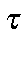

Next: Gradients Up: Theory Previous: Self-consistency test


Next: Gradients Up: Theory Previous: Self-consistency test
MOPAC calculations do not distinguish between enantiomers, consequently the sign of the dihedrals can be multiplied by -1 and the calculations will be unaffected. However, if chirality is important, a user should be aware of the sign convention used.
The dihedral angle convention used in MOPAC is that defined by Klyne and Prelog [72]. In this convention, four atoms, AXYB, with a dihedral angle of 90 degrees, will have atom B rotated by 90 degrees clockwise relative to A when X and Y are lined up in the direction of sight, X being nearer to the eye. In their words, "To distinguish between enantiomeric types the angle is considered as positive when it is measured clockwise from the front substituent A to the rear substituent B, and negative when it is measured anticlockwise." The alternative convention was used in programs which preceded MOPAC.